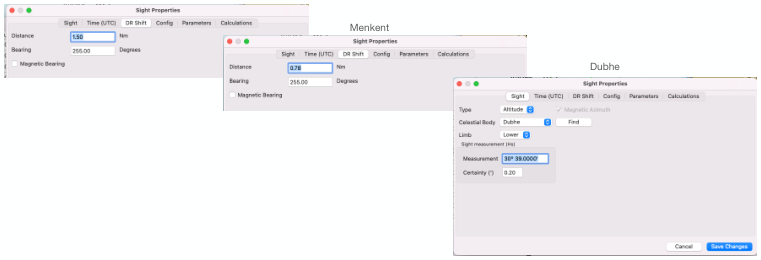

| Previous | Contents | Next |
Altitude sights and coastal navigation · Page 13 of 66
Use Case 1 SW of Hawaii UTC 16 Jul 2025
3. Fix or Running Fix (Traditional Cel Nav Method “Each sight’s DR Shift”)
The idea of the running fix is that you Advance the 1st sight to the last sight by the Distance traveled and Bearing (course) from 1st to last sight. So, Vega is 1.5 nm and 255 bearing to Dubhe. Be careful what bearing you meant. True is the default (that’s what is most frequently used offshore), but was your bearing Magnetic? Then you advance the 2nd sight (Menkent) to the last sight Dubhe. Menkent is .78nm bearing 255 degrees to Dubhe. The last sight Dubhe, the Distance and Bearing is 0 for now.
Vega
 |
| Open illustration at full size |
| Previous | Contents | Next |